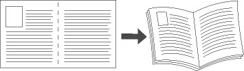
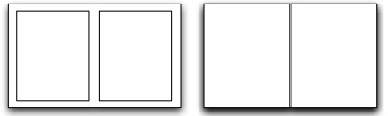

Pjecer
Pjecefunktionen udskriver to sider på hver side af papiret. Printerdriveren omsorterer siderne og placererer dem med korrekt retning og sidetal, når de foldes. Siderne kan derefter hæftes for at oprette en pjece. Husk, at en pjeces layout er anderledes end et dokuments layout med et billede på hver side af papiret. Linje- og sideombrydning varierer på samme måde.

Bemærk:
- Ikke alle de viste indstillinger kan bruges på alle printere. Visse muligheder gælder kun for specifikke printermodeller, operativsystemer eller drivertyper.
- Pjecer kan anvendes til at reducere det overordnede sidebillede, så det afpasses efter det valgte papirformat.
Sådan oprettes en pjece:
- Klik på piltasterne i panelet Pjecer ud for Efterbehandling af pjecer og vælg en indstilling.
- Ingen efterbehandling eller Foldning: Denne funktion hæfter eller folder ikke udskrivningsopgaven.
- Pjecefalsning eller Foldning: Falser eller folder opgaven på midten.
- Pjece/falsning eller Foldning og hæftning: Denne funktion falser eller folder udskrivningsopgaven på midten og hæfter to gange langs foldningen for at holde siderne på plads.
- Slå pjecelayout fra: Anvender ikke indstillinger for pjeceformat i udskrivningsopgaven. Anvend denne indstilling, hvis din opgave allerede er formatteret som en pjece.
- Klik på piltasterne ud for Afpas efter nyt papirformat for at lade printeren afpasse et billede efter et nyt papirformat. Vælg det ønskede papirformat. Klik på Brugerdefineret for at angive et brugerdefineret format.
- Klik på piltasterne ud for Pjecemargen for at angive margenværdi og vælg en indstilling.

- Angiv midtersletning og krympning, hvis det er nødvendigt.
- Midtersletning: Angiver midtersletningens bredde i punkter mellem siderne. Indtast en værdi eller anvend piltasterne til at vælge antallet af punkter. Et punkt er lig med 0,35 mm.
- Krympning: Angiver, hvor meget siden skal forskydes udad (i tiendedele af et punkt). Indtast en værdi eller anvend piltasterne til at vælge, hvor meget billederne på siden skal forskydes.
- Klik på OK.